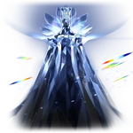

Fuli
Aeon of The RemembranceLore
Fuli adalah Aeon yang memimpin Path of Remembrance (Jalur Kenangan), bertugas merekam segala peristiwa di alam semesta untuk mempersiapkan kelahiran kembali setelah kehancuran akhir. Fuli mewujudkan konsep "mengingat" secara mutlak—semua sejarah, momen, dan kebenaran harus diabadikan agar tidak hilang selamanya.
Yang paling misterius: Fuli "belum ada" secara penuh di masa sekarang. Mereka hanya akan naik menjadi Aeon di akhir waktu (end of time), ketika seluruh sejarah alam semesta telah selesai. Kemunculan Fuli di masa lalu sebenarnya adalah hasil dari perjalanan balik waktu mereka sendiri—mereka "mengedit" memori untuk muncul dan merekam peristiwa penting, menciptakan loop kausal yang rumit.
Di Simulated Universe dan cerita Amphoreus/Evernight, Fuli terlihat sebagai sosok yang muncul hanya saat peristiwa besar terjadi. Herta dan yang lain mencatat bahwa Fuli sangat enigmatis—tidak ada yang tahu kapan mereka "lahir", seolah mereka selalu ada di annal sejarah. Kemunculan Fuli sering menandakan peristiwa krusial, tapi sebenarnya sebaliknya: Fuli muncul untuk merekamnya.
Nama "Fuli" (浮黎) berarti "mengapung di kegelapan" atau terkait kristal memori. Pronoun: THEY/THEM (uppercase sejak update awal). Quote ikonik: "Fragments of memories flash before you until they get too fast to be recognizable."
Emanator
Emanator Remembrance disebut **Pure Children of Anāsrava** (Anak Murni Anāsrava) atau Child of Remembrance. Mereka adalah Emanator spesial yang lahir dari pecahan tubuh ilahi Fuli yang hancur. Meski berasal dari latar belakang, ras, dan pengalaman hidup berbeda, mereka semua memiliki kesamaan: telah menapaki Path of Remembrance dan memiliki penampilan yang mirip (sering seperti wanita dengan fitur kristal/es).
Setiap Pure Child adalah kandidat potensial untuk menjadi Fuli di akhir waktu—mereka adalah "shard" yang akan berkumpul kembali menjadi Aeon penuh. Mereka bisa menciptakan dreamscape dari memoria dan memiliki kekuatan manipulasi memori yang kuat.
Contoh terkenal: **March 7th** (kemungkinan besar salah satunya, karena ditemukan dalam es kristal tanpa memori, dan terkait erat dengan Remembrance). **Cyrene** juga disebut sebagai Pure Child. **Black Swan** dan anggota Garden of Recollection (Memo Keeper) sering dianggap Emanator karena akses langsung ke kekuatan Fuli, meski bukan Pure Child.
Tidak ada Emanator baru confirmed secara eksplisit di luar Pure Children hingga update terbaru. Garden of Recollection adalah organisasi utama pengikut Fuli, mencari memori berharga di seluruh kosmos.
Penampilan
Fuli muncul sebagai sosok humanoid yang diukir dari material kristal reflektif transparan, seperti patung es atau kristal memori yang berkilau. Wajahnya tidak jelas/tidak bisa dibedakan, ditutupi mianguan (topi kerajaan kuno) dengan tirai mutiara yang menjuntai, memberikan aura abadi dan tak terjangkau.
Tubuhnya memantulkan fragmen memori seperti kilatan cahaya cepat, sering terlihat retak atau pecah di representasi tertentu (seperti di trailer Myriad Celestia "Evernight"). Kemunculan mereka selalu disertai efek kilau es dan suara samar seperti pecahan kristal.
Di Simulated Universe, Fuli jarang muncul langsung—hanya fragmen atau bayangan kristal. Bentuk "rusak" di beberapa cerita menandakan bahwa Fuli saat ini adalah "versi masa depan" yang belum lengkap.